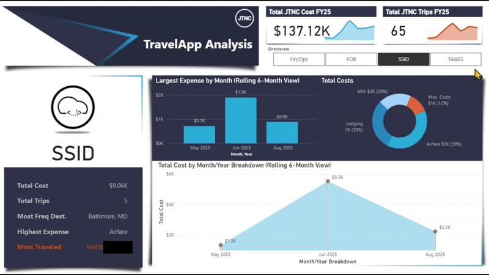
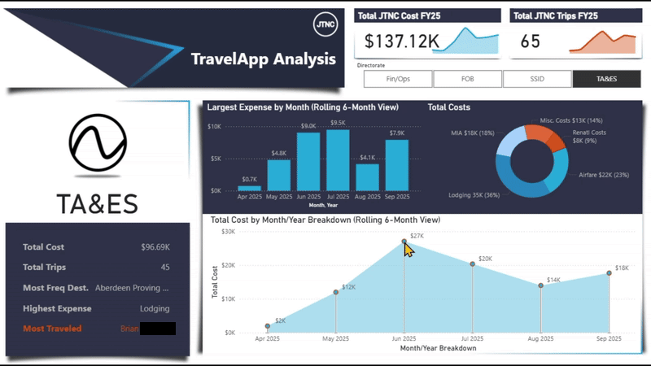
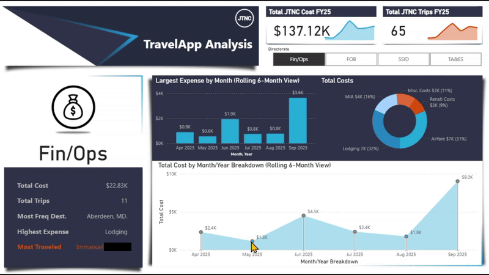

Power BI Projects
TravelApp Financial Analysis
This Power BI Dashboard was created to perform a analysis of all the types of expenses that were incurred during trips for our employees. It was both, my most complex and most entertaining report, I have ever created. Source data was taken from the results that is utilized by our JTNC Travel Request App.
With the integration of UserInformationList, we were able to identify actual names of those who submitted requests for travel.
Some of the other highlights of this report are:
- It will ALWAYS only show the last 6 months of data for each "Directorate".
- The bar chart (middle) Displays data, for the "Highest Expense", that is different for each "Directorate".
- The dumb-bell chart (bottom) has points that are selectable to show data.
- The image for each section is a
base64set of code.



DLL Analysis
This Power BI Dashboard was created to show the team the types of data being downloaded from our data storages. I was able to source the RAW data from a SharePoint List, that our team maintains.
With a lot of DAX scripting and the right visuals, I was able to set-up an easy-to-understand Dashboard where anyone could visit to get the information they desired. I then set-up a "Auto-Refresh" schedule to increase efficiency and make the Dashboard self-reliant.
This was a great project.


SSID Action Items Metrics
This Power BI Dashboard was created to show current "Action Items" that the team was working on. Again, I sourced this from another SharePoint List that the team maintains. I was looking for a more colorful way to show "High Value" Action Items that were being engaged and this also allowed us to see what was needing more attention.


CM Modernization Timeline
These Power BI Dashboard was created to show a Gantt Chart, as well as a Timeline for presentation to C-Suite personnel. The RAW data was sourced from a Excel Sheet, stored on a SharePoint Data Store. This was done to allow the department to make quick updates without needing a Power BI operator to make changes.
The visuals were meant to make it easer on the eyes to look at, while still conveying the importatnt dates and task names.


DoDIR Sprint Tracking Info
This Power BI Dashboard was created to show a more constricted Sprint Tracker for a smaller team we have. The RAW data was sourced from a SharePoint List the team maintained with their specific "labeling" for each sections. This gave us the ability to "fine-tune" to see the major events that were experiencing "BLOCKERS" and allowed for better collaboration within the team.